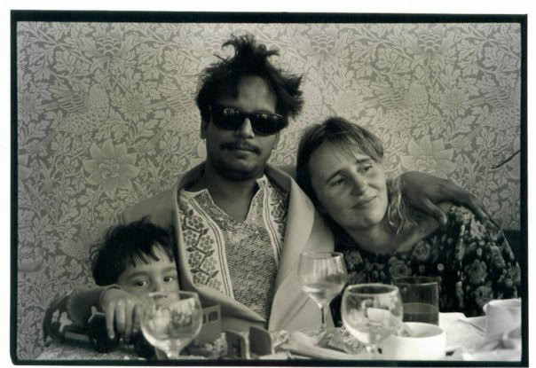
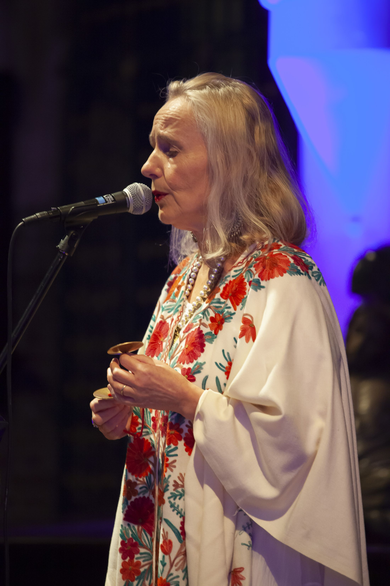
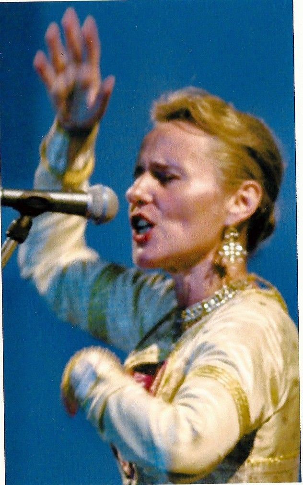
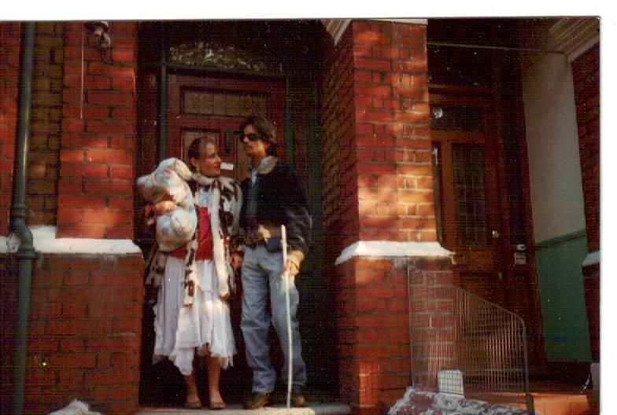
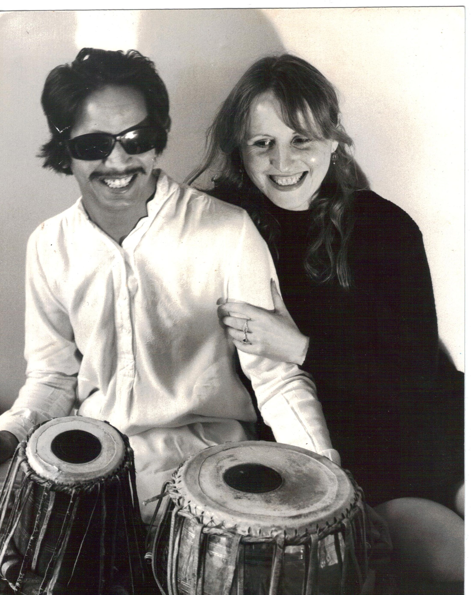
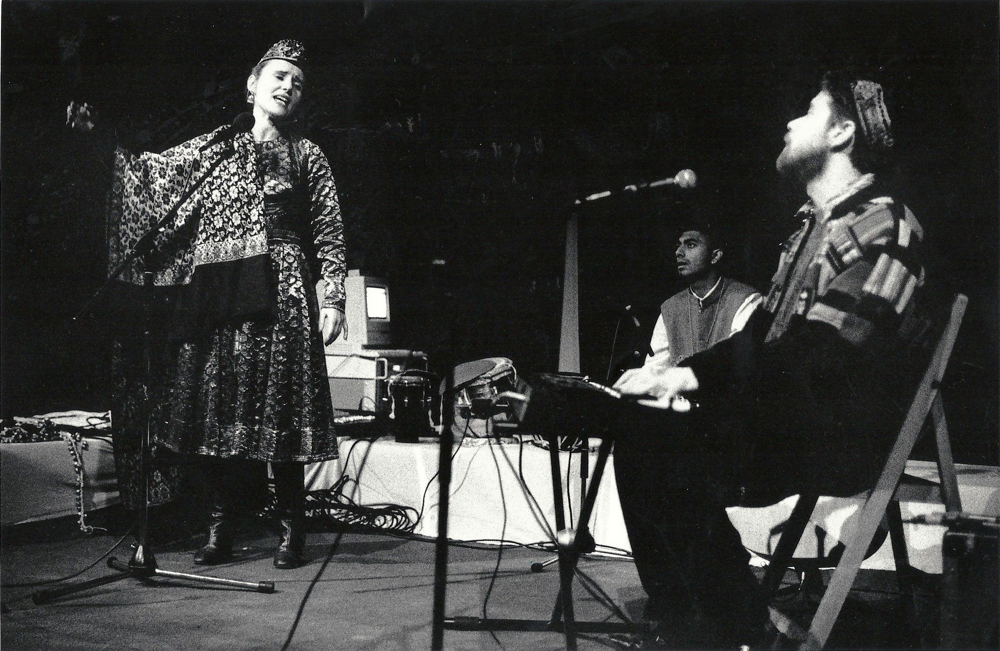

Bio
Linda Shanson
also known as Linda Shanovitch
also known as Linda Shanovitch
Linda Shanson is a polymath working across music, dance, ceramics, visual arts and the written word.
She holds a BSc (Hons) in Anthropology, and her studies and early career took her to live and work in Mexico, India and Paris — experiences that continue to shape her life and creativity. One of her earliest songs was composed at the age of thirteen and broadcast on the BBC Light Programme, and later published by Northern Songs Ltd. — who published and managed the songwriting catalogue of John Lennon and Paul McCartney.
As a singer-songwriter, Linda has released several albums with her band Jazz Orient (also recorded as Re-Orient) on the ARC Music label, performing extensively across the UK, Europe and Oman. She composes and sings across a range of styles including Indian vocal traditions, plays tabla percussion, and has studied and performed Indian classical (Kathak) dance. Her extra-vocal improvisations earned her the memorable title “Bjork on Helium” from the London Evening Standard, while Jazzwise Magazine praised her voice, in a review of the album Bird Dancer, as “striking and expressive throughout.”
Linda is a published author. Her children's book Journey With The Gods (Mantra Publishers), illustrated by Anita Chowdry, has been used nationally for music and dance workshops in schools and is available in English, Bengali, Gujarati, Urdu, Hindi and Panjabi; three of its songs also appear in the poetry collection A Tickle in Your Tummy (MacDonald Young Readers). Her adult short story Frankenstein in India won the 2018 Elmbridge Literary Competition, and her long-form poetic work Raaja Ajaar, written in 1976, has recently been revived with new music.
Throughout, she has painted — loose, vivid work in watercolour, crayon and ink that gives this site its colour. She has worked extensively as a performer and producer alongside her husband, sitar virtuoso Baluji Shrivastav OBE, on many innovative cross-cultural projects.
“Shepherd and Shrivastav produce fireworks!”Songlines, UK
“Outstanding Indian classical musicians interact with jazz soloists for a veritable feast of sound… gorgeous melodies throughout. Lovely stuff.”LA Daily News
“Linda Shanovitch gave a striking example of Kathak footwork, with the ankle bells reflecting the tiny changes in rhythm… a magnificent evening.”Hastings & St Leonards Observer





